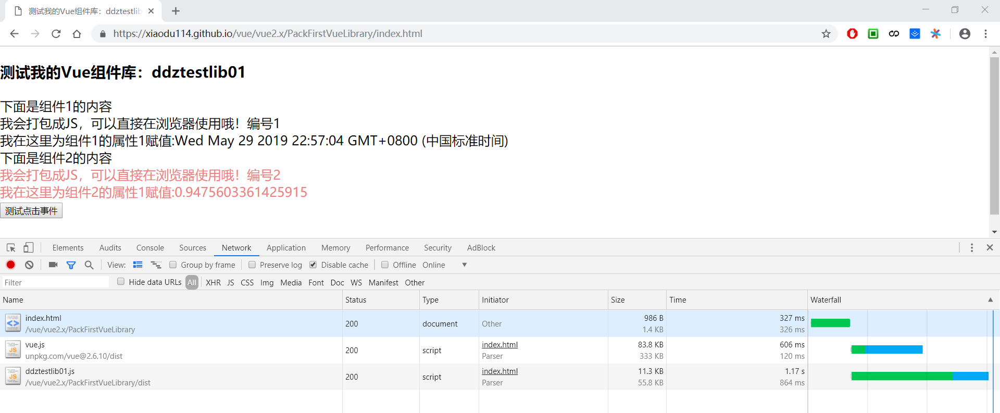

原文连接:https://www.cnblogs.com/du-blog/p/10933748.html
先说一下这篇文章的诞生原因。我们有一个这样的项目，类似或者说就是一个仪表板-Dashboard，其中的各个部分可能不是一个部门写的……我们需要提供拖拽布局（大小和位置）和展示的能力。要实现这样一个功能，想了好几种方式实现（后面的笔记详说），最后选择了这篇笔记的实现方式：写整个项目的，算是使用方；写每个组件的，算是vue类库（UI、组件库）的提供方。之后就是我们如何使用这些类库的问题了，就像我们使用element-ui一样，这样说就明白了吧！这里不说父子之间如何通信以及如何使用类库，只说如何打包类库。
之前总是使用别人的类库了，没有自己写过，今天就着这个机会研究了有了一下，demo算是跑通了，深入的就需要之后慢慢学习了。
开始还是看了一下element-ui是如何将所有的组件打包到一个JS文件，并且可以CDN方式使用的，发现和我们写一个单独的.vue单文件组件没有什么区别，主要是webpack的output和入口文件的写法有些不同，其他的都大同小异，先看一下output


var path = require('path');
var VueLoaderPlugin = require('vue-loader/lib/plugin');
module.exports = {
mode: 'development', // production|development // https://segmentfault.com/a/1190000013712229
entry: "./index.js",
output: {
path: path.resolve(__dirname, './dist'),
publicPath: '/dist/',
filename: 'ddztestlib01.js',
library: 'ddztestlib01',
libraryTarget: 'umd',
libraryExport: 'default',
umdNamedDefine: true,
// globalObject: `(typeof self !== 'undefined' ? self : this)`, // https://stackoverflow.com/questions/49111086/webpack-4-universal-library-target
globalObject: 'typeof self !== \'undefined\' ? self : this' // element-ui 写法
},
module: {
rules: [{
test: /\.vue$/,
loader: 'vue-loader'
}, {
test: /\.css$/,
loader: 'css-loader'
}, {
test: /\.less$/,
loader: 'style-loader!css-loader!less-loader'
}]
},
devtool: "source-map",
resolve: {
alias: {
'vue': 'vue/dist/vue.js'
}
},
plugins: [
new VueLoaderPlugin()
]
} 这里主要说一下，libraryTarget、libraryExport、umdNamedDefine和globalObject
1、libraryTarget：打包类库的发布格式，这里使用UMD，其他选项不解释（其实是……）
2、libraryExport：这个选项同样不知道干什么的，但是我遇到了一个问题就是开始没有添加这个选项（虽然看了element-ui的打包，但是我给过滤了），导致使用的时候发现有双层的“default”，因为不是很了解，所以查了一些资料先看看，却发现和这篇文章说的一样：webpack组织模块打包Library的原理及实现，后来发现该文中使用的选项过期了，之后还是又看了一遍element-ui 才搞定，这一大圈
3、umdNamedDefine：这个还是同上，但是添加和不添加这个选项比较一下生成文件你就知道了
4、globalObject：这个是真不知道了，但是在stackoverflow中无意发现说这是个Bug，地址：https://stackoverflow.com/questions/49111086/webpack-4-universal-library-target
现在看来webpack配置文件处理output某些属性和我们正常开发没有什么区别，下面看一下他的入口文件：
// 1、这里导入需要导出的组件，统一处理
import DDZComponent01 from './src/components/DDZComponent01.vue';
import DDZComponent02 from './src/components/DDZComponent02.vue';
// 1.1、书写Vue插件（保证只引入某一个组件时可用），https://cn.vuejs.org/v2/guide/plugins.html
DDZComponent01.install = function (Vue) {
Vue.component(DDZComponent01.name, DDZComponent01);
};
DDZComponent02.install = function (Vue) {
Vue.component(DDZComponent02.name, DDZComponent02);
};
// 2、遍历注册所有的组件（依赖），全局时使用
const components = [
DDZComponent01,
DDZComponent02
];
const install = function (Vue, opts = {}) {
components.forEach(component => {
Vue.component(component.name, component);
});
// 这里除了注册组件，还可以做一些其他的东西
// 你可以在Vue的原型上扩展一些方法
// eg:element-ui
// Vue.prototype.$message = Message;
// 使用：this.$message({message:"xxxxx",type:"success"});
};
// 可以根据实际情况，是否需要这段代码（CDN引入，便可使用所有组件）
if (typeof window !== 'undefined' && window.Vue) {
install(window.Vue);
}
// 3、导出类库的版本、组件、Vue插件需要暴露的install方法
export default {
version: '0.0.1',
install,
DDZComponent01,
DDZComponent02
};
// 4、使用方式
// 4.1、使用部分组件
// 4.1.1、
// import { DDZComponent01 } from '……/ddztestlib01.js';
// 局部注册：components: { ddzcomponent01: DDZComponent01 },
// 全局注册：Vue.use(DDZComponent01); //这种写法需要对应的组件暴露install方法
// 4.1.2、
// import * as ddztestlib01 from '……/ddztestlib01.js'; // 这里的书写方式应该和导出的写法有关系
// 局部注册：components: { ddzcomponent01: ddztestlib01.DDZComponent01 },
// 全局注册：Vue.use(ddztestlib01.DDZComponent01); //这种写法需要对应的组件暴露install方法
// 4.2、使用类库中的所有组件
// 4.2.1、
// import * as ddztestlib01 from '……/ddztestlib01.js'; // 这里的书写方式应该和导出的写法有关系
// Vue.use(ddztestlib01); //这里的使用就是调用对象的install方法
// 4.2.2、cdn方式使用
// <script src="……/ddztestlib01.js"></script> //如果window.Vue存在，则自动注册全部组件
// 4.3、使用systemjs异步加载（测试版本：SystemJS 3.1.6）
// 加载之后，返回的是该类库的默认导出对象：{default:{version:,install:,……}}。这种加载方式和CDN类似，如果window.Vue存在，则自动注册全部组件。所以如果window.Vue存在，返回的对象意义不大；除非window.Vue不存在。注意：组件注册成功之后在显示
// 代码示例：
// System.import("……/ddztestlib01.js").then((result) => {
// // 成功加载之后，显示组件
// // 如果window.Vue存在,并且存在类似上面的install方法，则这里的返回结果没有什么意思
// // 至于如何使用，则可以根据具体情况而定，选择自己合适的
// });
// 4.4、使用requirejs异步加载（测试版本：requirejs 2.3.6）
// 和systemjs类似，只是使用方式不同
// 代码示例：
// requirejs.config({
// paths: {
// "ddztestlib01": tempUrl
// }
// });
// requirejs(["ddztestlib01"], (result) => {
// // 成功加载之后，显示组件
// });
// 4.5、……使用模块加载器加载JS和CDN方式差不多，只是不同的加载器返回的结果不同（有支持UMD，有的不支持）入口文件就不解释了，在里面我觉得解释的够清楚了，还有类库中包含的组件这里就不说了，也没有什么好说的就是“Hello World”。
最后在附上使用类库的代码：
<!DOCTYPE html>
<html lang="zh-cmn-Hans">
<head>
<meta charset="UTF-8">
<meta name="viewport" content="width=device-width, initial-scale=1.0">
<meta http-equiv="X-UA-Compatible" content="ie=edge">
<title>测试我的Vue组件库：ddztestlib01</title>
<style>
*,
*::before,
*::after {
box-sizing: border-box;
}
html,
body {
height: 100%;
width: 100%;
margin: 0;
}
[v-cloak] {
display: none;
}
</style>
</head>
<body>
<div id="myApp" v-cloak>
<h3>{{msg}}</h3>
<div>下面是组件1的内容</div>
<ddzcomponent01 :prop1="ddzcomponent01prop1"></ddzcomponent01>
<div>下面是组件2的内容</div>
<ddzcomponent02 :prop1="ddzcomponent02prop1"></ddzcomponent02>
</div>
<script src="https://unpkg.com/vue@2.6.10/dist/vue.js"></script>
<script src="https://xiaodu114.github.io/vue/vue2.x/PackFirstVueLibrary/dist/ddztestlib01.js"></script>
<script>
var myApp = new Vue({
el: "#myApp",
data() {
return {
msg: "测试我的Vue组件库：ddztestlib01",
ddzcomponent01prop1: "我在这里为组件1的属性1赋值:" + new Date(),
ddzcomponent02prop1: "我在这里为组件2的属性1赋值:" + Math.random(),
}
}
});
</script>
</body>
</html>
这篇文章就到这里吧！有写的不对的地方，敬请指正，非常感谢！